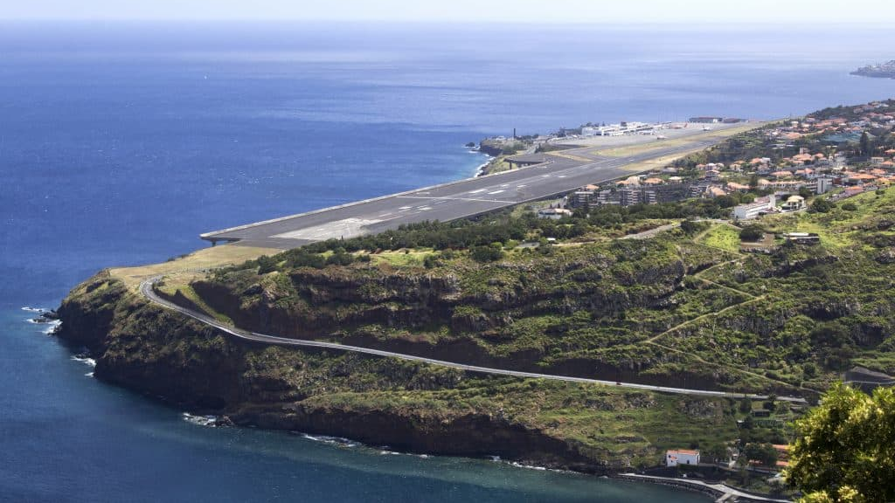
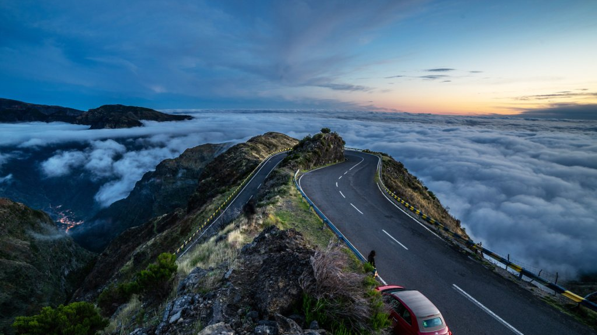
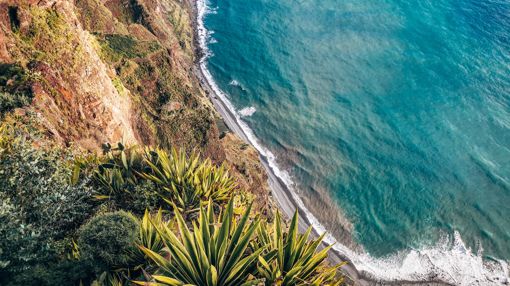

Geografia Madery


Madera to jeden z najwyższych na świecie wulkanów, powstała wynkiu serii erupcji podwodnego wulkanu. Masa skał i gazów "wypluta" z podwodnego krateru stworzyła ten fantastyczny krajobraz. Sama wyspa to część formacji wulkanicznej, większość znajduje się pod wodami Ocenanu Atlantyckiego. Wtórne erupcje doprowadziły do powstania płaskowyżu Paul da Serra, zwanego "gąbką" Madery, tutaj początek ma wiele strumieni, potoków i rzek. Erozje odpowiadają z kolei z utworzenie górskich grani, wąwozów oraz klifów, w tym jednego z najwyższych klifów Europy - Cabo Girão.
Podróż bez biura

Kiedyś panowało przekonanie, że samodzielna wyprawa nad Atlantyk to logistyczne wyzwanie. Jednak Madera to jeden z najwdzięczniejszych kierunków na debiut "Bez biura". Wyspa jest bezpieczna, drogi są świetnie utrzymane, a Portugalczycy niezwykle pomocni. Można podróżować bezpośrednio i szybko. Królują wtedy tanie linie WIZZ AIR. Loty odbywają się bezpośrednio z Warszawy, Katowic, sezonowo Gdańsk. Drugą opcją jest komfotowa podróż z przesiadką.
Wynajem samochodu
Jeśli planujesz zwiedzanie wyspy na własną rękę, samochód jest niezbędny. Należy wiedzieć, że drogi są bardzo strome, zakrętny bywają ostre, a miejsca parkingowe są ciasne. Można polecić lokalne wypożyczalnie z którymi można się skontaktować przez stronę odkryjmadere.pl. Są tam wypozyczalnie bez kaucji, bez karty kredytowej, płatność przy odbiorze, zasady są bardzo przejrzyste.

Klif Cabo Girão

Mierzący 580 metrów wysokości Cabo Girão jest najwyższym cyplem w Europie. Dzięki słynnej podwieszanej szklanej platformie jest jedną z najczęściej odwiedzanych atrakcji turystycznych w Câmara de Lobos i na archipelagu Madery. Z tego miejsca zwiedzający mogą zobaczyć Câmara de Lobos i Funchal - miejski krajobraz połączony z zielonymi górami. W tle można również zobaczyć Fajã do Rancho i Fajã do Cabo Girão, z ziemiami uprawnymi u podnóża klifów.
Baseny Lawowe Porto Moniz
Północne wybrzeże Madery słynie z potężnych fal, które potrafią budzić grozę. Jednak w Porto Moniz natura stworzyła idealne schronienie. Naturalne baseny lawowe wypełnione krystaliczną wodą z oceanu to miejsce, gdzie możesz się zrelaksować, czując na twarzy bryzę z fal rozbijających się tuż obok. To najlepsze spa, jakie mogła wymyślić ziemia. Krystaliczna woda oceaniczna filtrowana przez bazaltowe skały. Po kąpieli zjedz lokalne lody z widokiem na wysepkę Ilhéu Mole.
Szlak górski Pico do Arieiro
Wyobraź sobie, że budzisz się o 5 rano, parzysz kawę do termosu i ruszasz krętymi serpętynami w górę, gdy cała wyspa jeszcze śpi. Pico do Arieiro to jedno z niewielu miejsc na świecie, gdzie możesz stanąć na wysokości 1818 metrów n.p.m., nie brudząc sobiwe nawet butów trepkingowych - asfalt prowadzi pod sam szczyt. Tutaj poczujesz co to znaczy stać "ponad chmurami". Wschód słońca nad oceanem chmur - widowisko którego nie zapomnisz. Kręte, ale bezpieczne serpętyny, około 40 minut od Funchal.